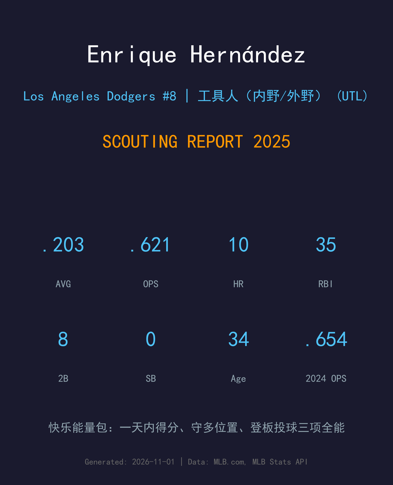
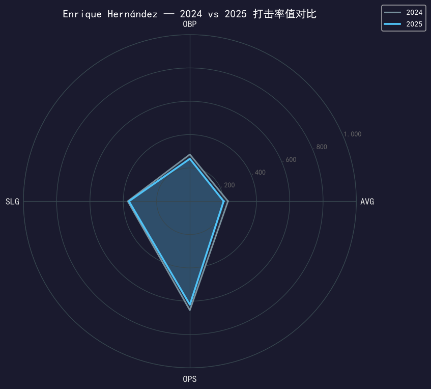
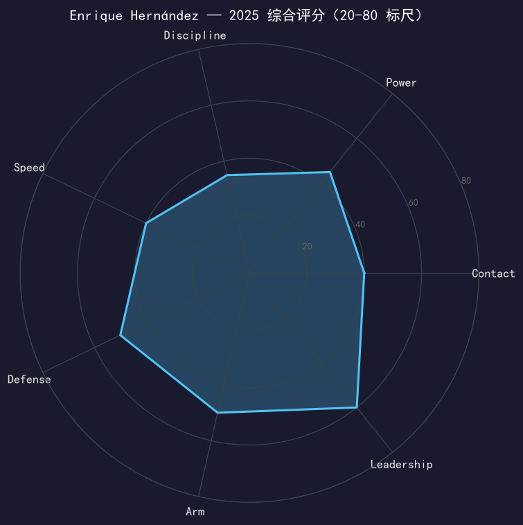

Los Angeles Dodgers #8 | 工具人（内野/外野） | 右打 | 快乐能量 · 香蕉哥

Enrique "Kiké" Hernández 是那种数据表装不下的球员：.203/.255/.366 的常规赛打击成绩是生涯最差之一，但他今年依然创造了历史——4 月 29 日对马林鱼，他成为现代棒球史上唯一一场「未先发却得分 2+、守备多个位置、且无失分登板投球」的球员（Opta 认证）。
5 月是他的高光月（.300/.364/.460），5 月 31 日对扬基他还与大谷翔平并肩成为全联盟仅有的两位「10+ 轰且 4 次登板」球员—— position player 投球这件事，他是认真的。7 月的左肘炎症让他缺席了近两个月，复出后角色收缩为纯工具人。
十月他重新发光：17 场季后赛出赛，世界大赛 18 局 G3 有 2 支安打。连续第二年随道奇夺冠后，这位 34 岁的「快乐能量包」再次进入自由球员市场——无论去向如何，他给每支球队的 clubhouse 带去的东西，都是无法计价的。
在道奇休息区穿香蕉服为队友应援，成为球队文化符号，"Rally Banana" 从此伴随他的职业生涯。
作为道奇主力工具人随队夺得 2020 年世界冠军（疫情缩水赛季），并在季后赛多次贡献关键长打。
从波士顿被交易回道奇，回归后立刻在 2023 年季后赛打出 .308 的贡献，重新成为球队化学反应的催化剂。
2024 年季后赛 .294（NLDS G5 致胜轰、NLCS G3 双响）；2025 年季后赛 17 场、世界大赛 18 局 G3 单场 2 安。连续第二年夺冠。

| 赛季 | G | PA | AVG | OBP | SLG | OPS | HR | RBI | 2B | BB | SO |
|---|---|---|---|---|---|---|---|---|---|---|---|
| 2024 | 126 | 393 | .229 | .281 | .373 | .654 | 12 | 42 | 16 | 27 | 77 |
| 2025 | 93 | 256 | .203 | .255 | .366 | .621 | 10 | 35 | 8 | 18 | 68 |
连续两年下滑，.203 的打击率已经逼近生涯底线。但 10 轰的 power 产量在 256 个打席里折算并不差——他的长打能力还在，消失的是击球落点。26 次保送（保送率 7.0%）对「自由挥击型」打者来说也不算灾难。真实的故事是：34 岁的身体（左肘炎症缺席近两个月）已经撑不起「哪里缺人守哪里」的全年消耗，他的价值正从「全能工具人」向「指定情境武器」收敛。
4 月 29 日对马林鱼的比赛将被载入怪癖纪录：Kiké 没先发，却在一场比赛中得分 2+、守了多个位置、登板投了一局无失分——Opta 统计这是现代棒球史（live-ball 时代以来）的首例。这个纪录浓缩了他的全部价值：他是大联盟最稀有的「场景型球员」，教练组可以在任何局面调用他。
5 月 31 日，他与大谷翔平成为全联盟仅有的两位「10 轰 + 4 登板」球员。position player 投球对大多数人是娱乐，对 Kiké 是认真的第二技能——生涯 11 次登板。5 月 9 日亚利桑那的 7 垒打之夜（14-11 逆转中的 6 分第 9 局，他的 RBI 二垒打是点火那支）则是他作为打者的赛季峰值。
7 月 7 日至 8 月 25 日的左肘炎症是赛季分水岭。复出后他的出赛密度大幅下降，工具人轮换的优先级排在了 Edman、Rojas 之后。对一位 34 岁老将来说，这是球队在用行动提示：「多功能」的上限正在逼近。
常规赛是衰退曲线上的又一年；但十月他再次证明了自己的 DNA——17 场季后赛出赛，外卡战、NLCS 与世界大赛 18 局 G3 都有单场 2 安的表现。对 Kiké 的评价从来不该只看常规赛的 .203：当冠军旗升起来的时候，每个队友都会告诉你他是不可或缺的那个人。

数据装不下的球员，价值在纪录册与 clubhouse 之间
C+ 级 / 情境型工具人
道奇 2025 季后赛之路：外卡轮 2-0 红人 → NLDS 3-1 费城人 → NLCS 4-0 酿酒人 → 世界大赛 4-3 多伦多蓝鸟（二连霸）。
| G | PA | AVG | OBP | SLG | OPS | HR | RBI | BB | SO |
|---|---|---|---|---|---|---|---|---|---|
| 17 | 69 | .250 | .294 | .359 | .653 | 1 | 7 | 4 | 24 |
Enrique Hernández 的 2025 年是他道奇生涯第二份一年约的结束——连续第二年，他将在休赛期以自由球员身份重新定位自己。34 岁的身体与连续下滑的率值意味着他的下一份合同不会再有主力承诺，但「季后赛证明过的情境武器 + clubhouse 能量源」这个组合，在重视化学作用的冠军竞争者那里永远有市场。波多黎各国家队的征召（他参加过 2023 WBC）也给了他另一条延续生涯的路径。
短期：一年短约回归道奇或加盟其他争冠队，定位情境工具人
中期：逐步从「全能」退化为「专精代打/代守」，延长生涯尾段
长期：退役后几乎是确定的教练/媒体/球队大使人选
Enrique "Kiké" Hernández 出生于波多黎各圣胡安，父亲曾是海盗队球探。2009 年他被休斯顿太空人选中（第六轮），2014 年在太空人完成大联盟首秀。2015 年他来到道奇，同年发明了 "Rally Banana"——穿着香蕉服在休息区跳舞为队友应援，从此成为洛杉矶球迷的宠儿。
他的道奇第一幕收获满满：2020 年世界大赛冠军、多次季后赛英雄时刻。2023 年他曾短暂离队加盟波士顿，同年 7 月被交易回来——游子归乡后立刻用 .308 的季后赛表现证明，他与这支球队的化学反应是不可替代的。他还是 Gil Hodges 的 #14 在 2022 年退休前最后一位穿着者。
场下的 Kiké 是道奇 clubhouse 的节拍器：2012 年小联盟球场停电时他跳《Night Fever》娱乐观众的视频至今被球迷转发；2016 年他客串出演了肥皂剧《The Bold and the Beautiful》。从香蕉服到世界大赛，他把「快乐」变成了自己的职业标签。